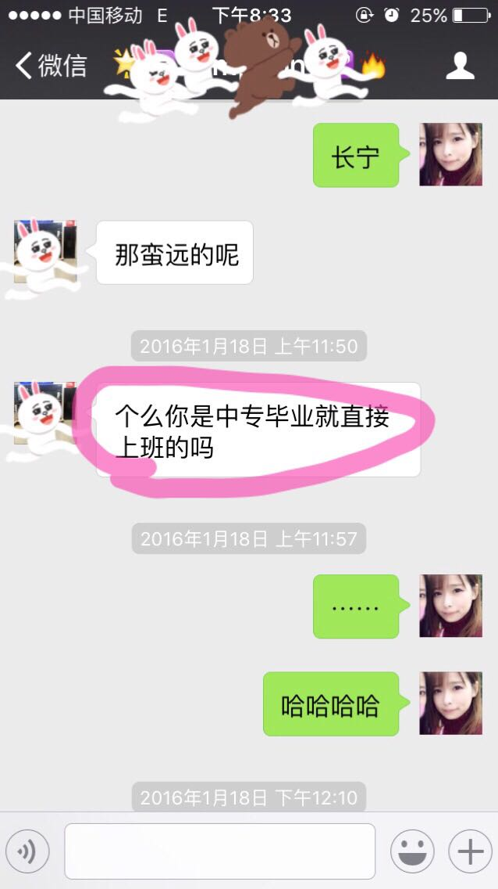
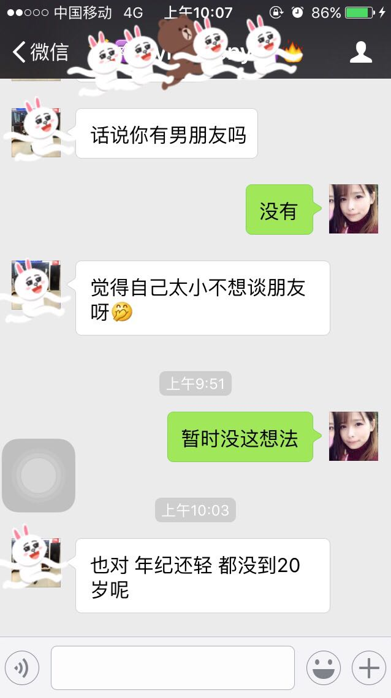

正文:
①可以一直装嫩，装嫩的照片就说是我妹妹的⋯⋯大家都相信了（笑）
②每次报年龄对方会吓一跳，所以现在我尽量不报了。（想知道我几岁吗？就是看上去➕5岁吧）

↑我和对方说我工作好久了⋯⋯对方的理解⋯⋯
谢谢大哥哥教诲⋯⋯
2/5更新↑又来了⋯⋯
同样我去女仆店两次后下班，店长打车载我一程，也问我工作了？工作多久了？我回答后他坐在副驾驶位置上沉默不语（懵哔了⋯⋯）
③追我的男生都比我小好几岁⋯⋯⋯（但最近发现自己是姐弟控orz）⋯
④最不好的一点就是，男生就觉得你呆萌可爱，就想把你领回家了⋯⋯可是我发现这种喜欢就好像喜欢一个可爱的小物件，像看到封面就觉得有趣的书，吵着买回家，只信手翻了翻，发现这本书不是自己想象的样子一一哪怕我保证这书只要你读完就会感觉值得，得到你想要的一一还是随手一丢，不闻不问。
这让我觉得对方喜欢的不是我这个人，而是他想象的我一一可能就是需要我那样小小可爱，却不需要聪明，有主见的「我」。一旦发现我「不乖」，就开始嫌弃，发现喜欢我的人多还不放心，更加嫌弃⋯⋯
悲哀。
被人说可爱都已经成习惯。我也非常努力了。
可是⋯⋯发现可能长得再普通一点会更好吧？
比如，你看，我这张脸，都不能生气。
否则对方会说「不像你了⋯⋯」
呵呵。
--------------------------------
我知道你想和我玩，那就关注下个人原创微信公众号（zhailove522），每天来点vivid chou吧～
|´・ω・)ノ